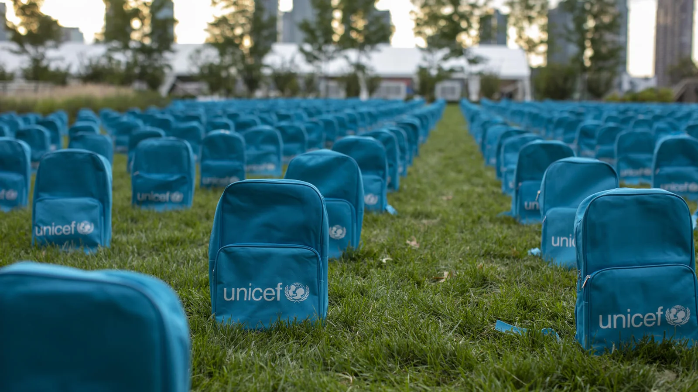

Creemos que ayudar deberia ser simple, transparente y al alcance de todos🫂.
Creamos un espacio donde las organizaciones pueden compartir su trabajo, sus proyectos y sus necesidades, y las personas pueden descubrir causas en las que involucrarse, donar tiempo o difundir iniciativas para que generen impacto.
Cada acción cuenta, y cada historia puede inspirar a otra.
